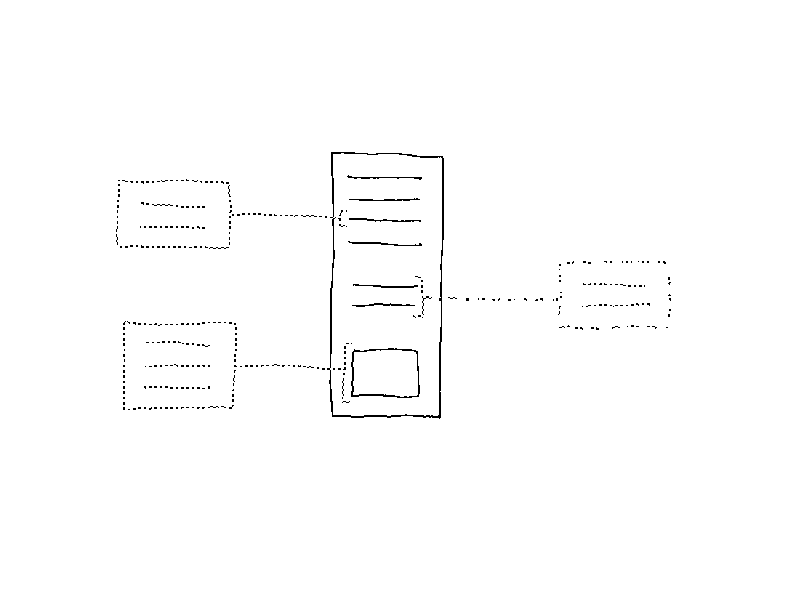

Concept Design and Prototyping: Redesigning Lateral Mode
Summary of alterations:
- Redesign of Lateral Mode
- The preview icons (seen in the previous entry) are now actual previews that show the linked content item.
Reflecting on the Design
Nelson envisioned bi-directional visible links.
IMAGE
On the web links only go outwards and the visibility of links (if at all) take the form of previews (of the webpage, not the particular content item) as the cursor hovers on a hyperlink.
As have been tested in the interactive prototypes so far, there are certain issues that comes with visible links between documents which mainly has to do with the complexity of information because various link types can be displayed all at once. As demonstrated in the previous entry, a solution to this is the possibility to apply #Labels to tag links in order to sort and filter the amount of information that is displayed. This is deemed useful particularly in Inventory View.
While in Lateral Mode, the crossing of visible links between documents is deemed superfluous and potentially a distraction from the content. In the previous entry the solution proposed took the form of preview icons that are only visible on deliberate action (i.e., as the cursor hovers a link). However, that only applies to documents that remain closed, meaning the two documents that are open.
In this round the idea of previews of linked documents are explored, with additional constraint that only one document is the main document (i.e, one open document).
Inventory View to Lateral Mode: Opening Documents
The image below shows how to open a document in Inventory View to enter Lateral Mode.

While in Lateral Mode it is possible to open the linked documents, as shown below. Note that each linked content item can be of the same document, in which case there are multiple instances of the same document.

Taking a closer look at Lateral Mode, the previews of the linked documents show the particular linked content item (i.e., with opacity) on the side of the open document. In the image below there are two tag links (#) and one transclusion (–).

Upon hovering on a link, the preview comes into view (i.e., without opacity) together with the #Label of the tag link.

Note that it is still possible to filter links based on their #Labels, and to exclude transclusions by toggling the visibility in the side menu.